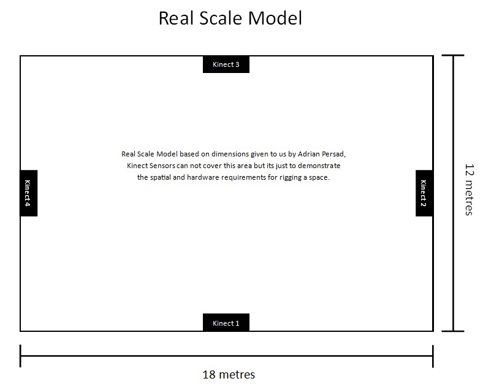
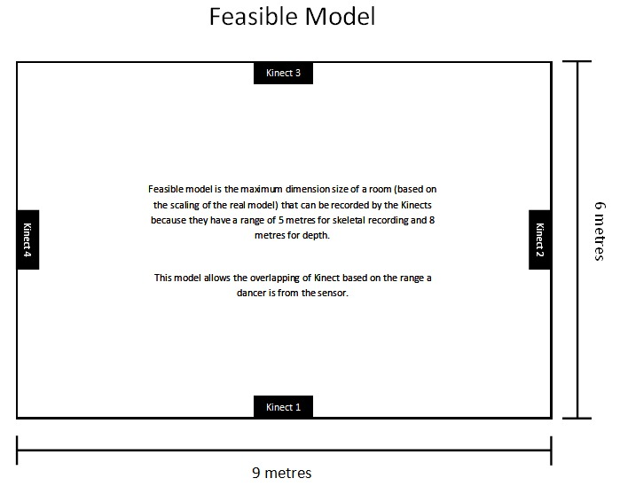
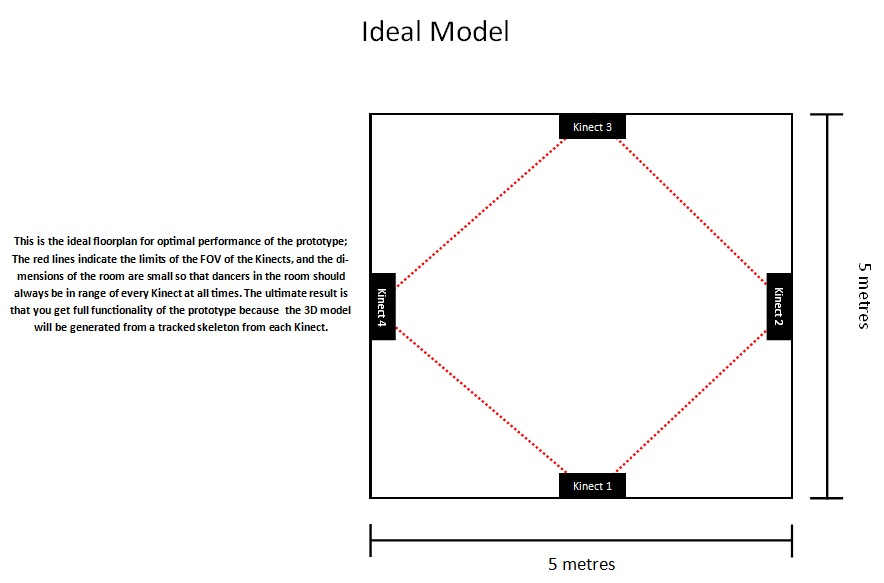
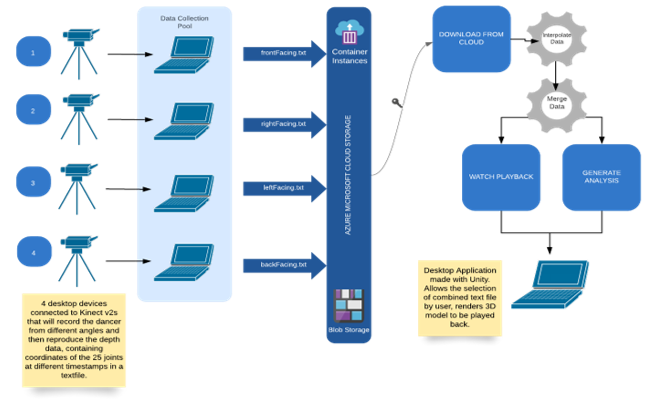

Design
System Architecture Diagram
Class Diagram
Data Storage
Implementation of Key functionalities
Potential Floor Plans for using the prototype
  System diagram for the project
Implementation of finished functionalities
- The video capture is done with the Unity asset along with 2 Kinects (all that we have access to so far). The Unity asset runs on each individual computer that is connected to a Kinect, creating a text file representation of the persons skeleton, capturing a frame roughly 30 times a second.
- Currenty, the merging runs on a specifically named file when the start button is pressed in the UI, which merges the 2 text files by interleaving the lines of the text file depending on the time stamp of the recorded frame.
- The UI then allows playback of the merged skeleton text file. Currently the playback just displays the movement of the merged skeleton and allows zooming in, locking onto specific body parts and rotating around the model during playback.